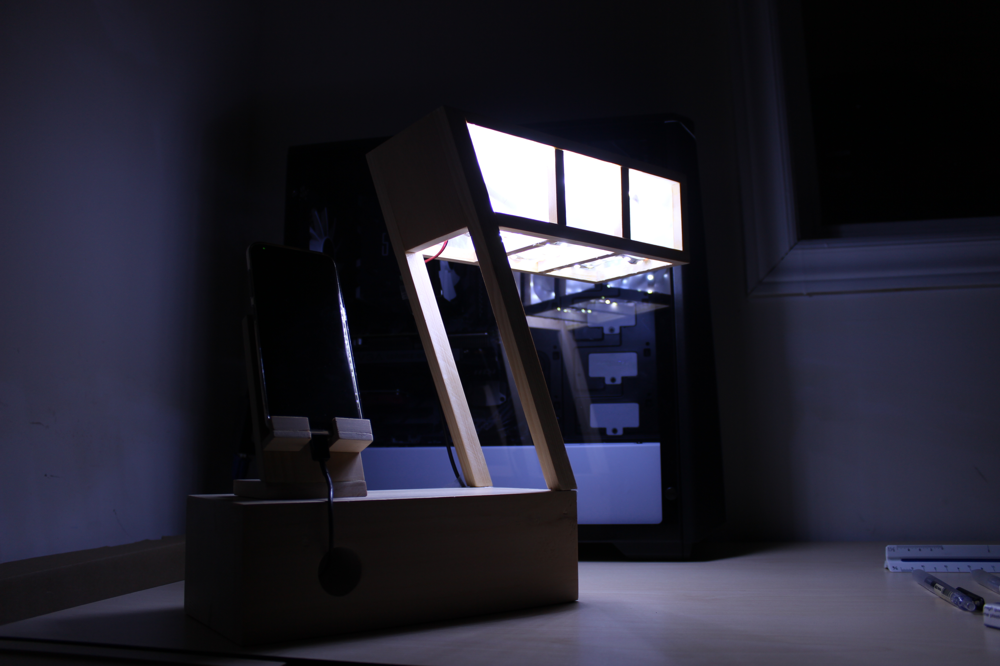
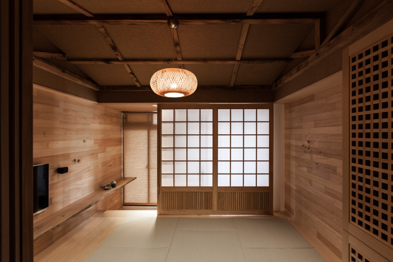
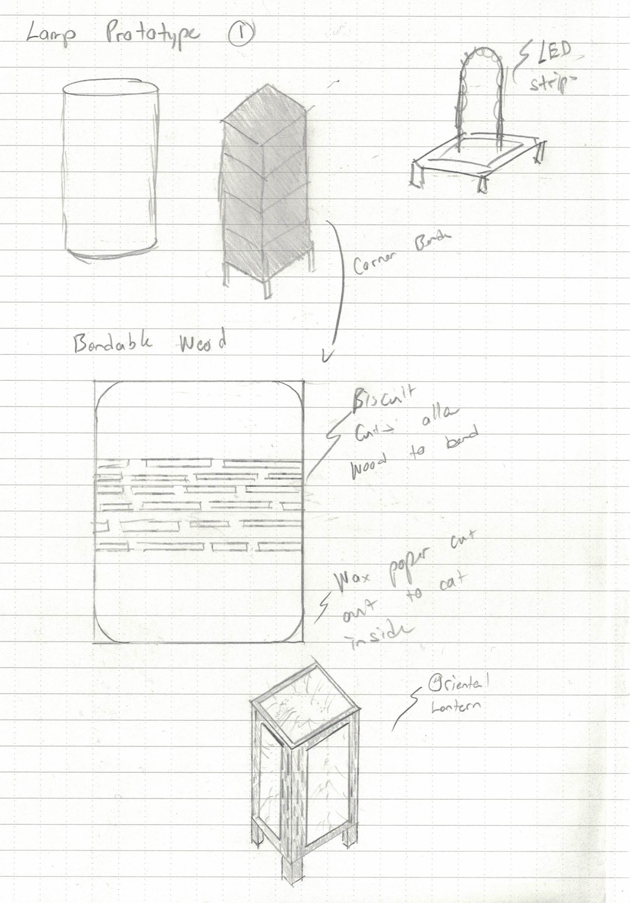
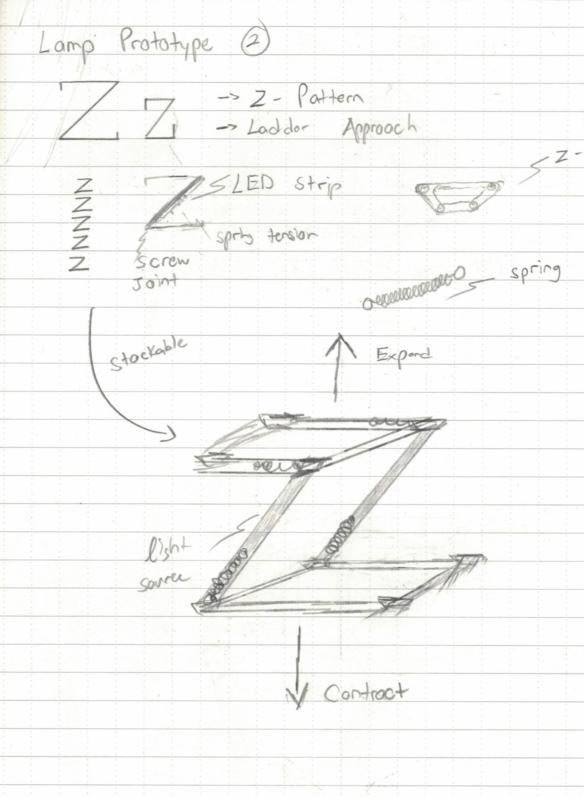
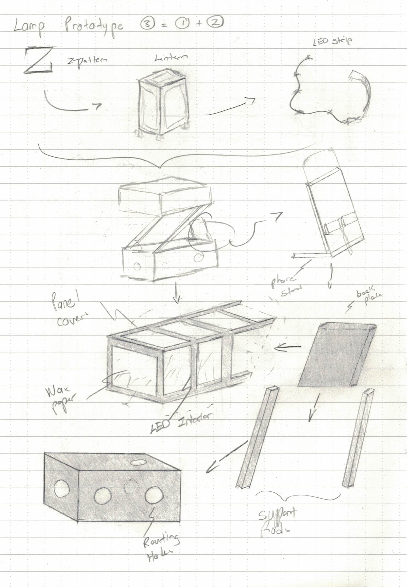
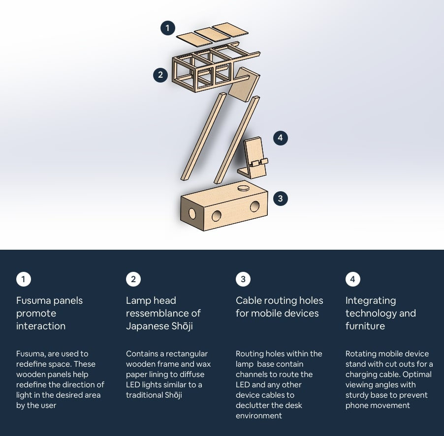
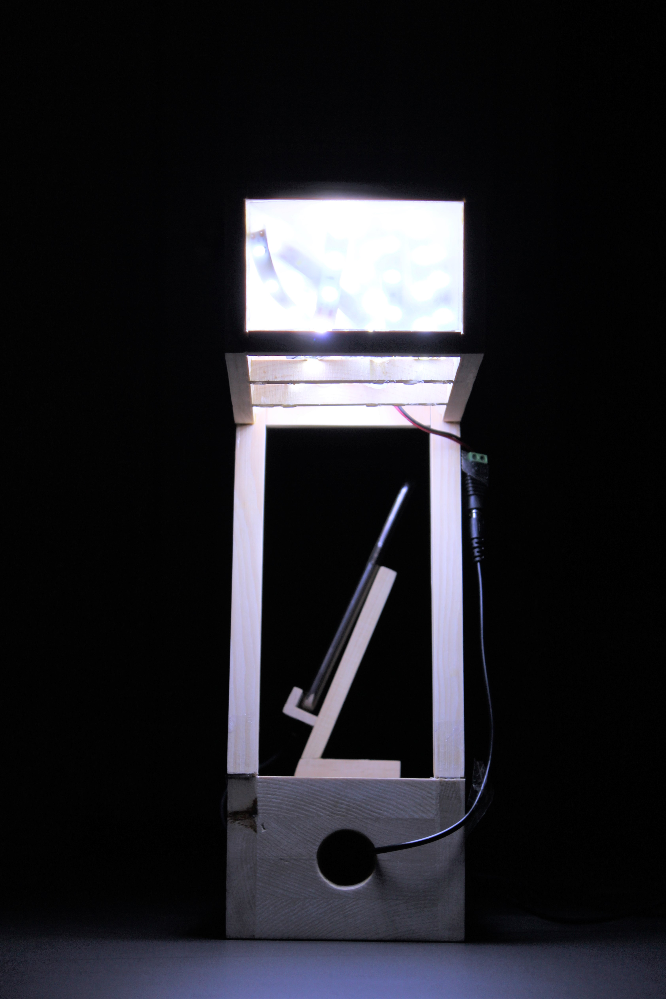
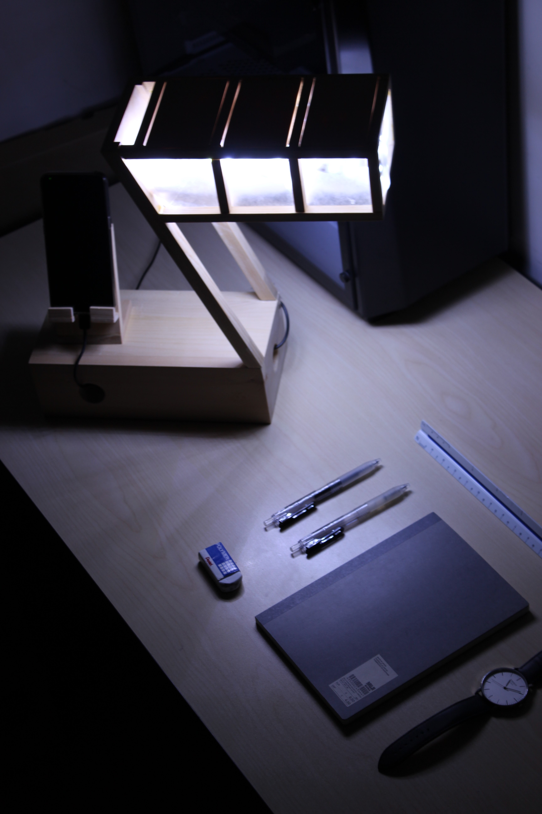
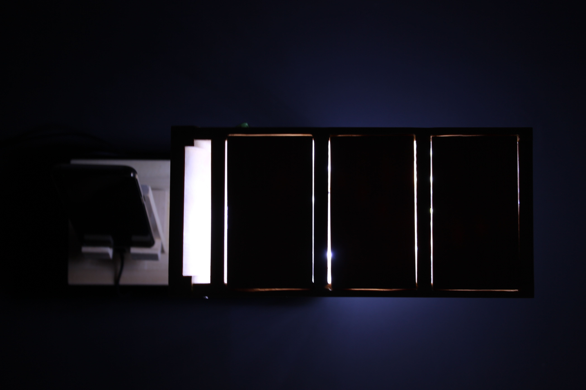

This project is a concept of an architectural styled furniture brought to life. Tying both everyday functionality to our living space intrudes a new way in how we interact with our furniture.
This lamp design introduces a new way to reflect ambient lighting and blends in with the desk environment. This lamp subtly stands out in a bold fashion while still delivering a lantern like glow to the room.

Final Lamp Design
As part of a final project for my technology design class, everyone was tasked to participate in a lamp design competition. The goal of the project was not to fixate our designs on traditional lamps but make one that stood out. This project really allowed the class to learn the product design process through iterative design. Final Designs are judged and voted on by the class and students are given 4 months of class time to complete the challenge.
Lamps can be considered everyday objects but not something we’d consider as a difficult concept to design. Ideas from similar competitions such as the "international lighting design competition and exhibition" displayed outstanding designs but none of that caliber were attainable with the timeline, materials available and purpose of the project. Popular websites such as Wayfair, Ikea and Walmart all contained lamps found in thousands of households, but I wanted something that was unique and functional.

Source: Ikea Interior Design Ideas
Lamps are essentially a lighting device that can can be used in any situation. The intended purpose was for this lamp to be utilized on a desk environment. This lamp would be primarily used by users who work at a desk and don't have plenty of desk space. The intended purpose that the design will cater to are as follows:
Preliminary sketches translating research and formulating ideas into tangible decisions.

Initial ideation sketches and inspiration

Experimentation with "Z" shape concept
Growing up Japanese Architecture has always fascinated me with its simplicity, use of natural materials, elegance and function.Shōji is a Japanese sliding door to help segregate different rooms and augment the internal space of a room. It was ultimately the driving force behind the overall design aesthetic as it had met all required competition criteria.

Possible integration of Japanese sliding doors
The idea behind Shōji was to design a lamp to be versatile, resourceful and multifunctional to give off a certain modern and simplistic vibe to the user. The Shōji is ideally used to give the user the ability to satisfy their intended use of the light source based on the placement of the wooden panels on the lamp frame. The inspiration for the lamp head sprouted from traditional Japanese living quarters which had rooms mainly consisting of wood and were separated by wooden sliding doors with wax paper.

Solidworks pre-render, measure twice cut once


